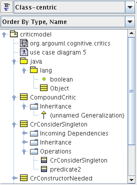
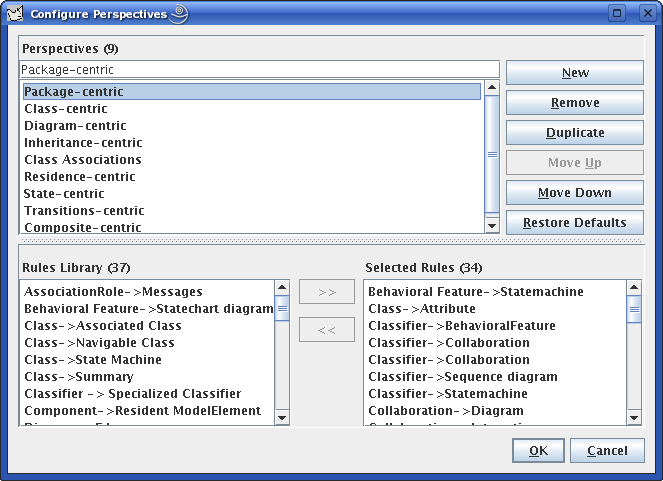

 El Explorador de ArgoUML presenta los contenidos del diseño. Este elemento de la interfaz de usuario de ArgoUML debiera ser familiar a todo aquel que haya usado Microsoft Windows Explorer o cualquier otro numero de herramientas CASE comerciales. Haciendo un solo click en un objeto dentro del panel del explorador seleccionará el objeto en el editor principal y mostrará los detalles del objeto en el panel de detalles. Haciendo doble click en un objeto en el explorador cambiará el objeto que se muestra en el panel principal de edición.
El ordenamiento de los elementos de la estructura del árbol puede ser alfabética, o (por default) por el tipo.
Normalmente, se deberá hacer doble click para modificar los diagramas, y un solo click para editar las propiedades de otros objetos.
El Explorador en ArgoUML era previamente llamado Panel de Navegación o árbol de Navegación.
Al contrario del explorador que se puede encontrar en muchas otras herramientas, ArgoUML proporciona múltiple perspectivas de exploración. El menú de selección en la parte superior del explorador establece la perspectiva actual. Cada perspectiva muestra una vista jerárquica del diseño enfatizando algunos aspectos y ocultando otros. Por ejemplo, una de las perspectivas presenta más claramente las relaciones de herencia, mientras que otra perspectiva enfatiza las transiciones entre estados. Muchas de las perspectivas del explorador son proporcionadas con ArgoUML, pero también se pueden configurar o definir nuevas perspectivas usando la ventana de configuración de Perspectiva, como se muestra debajo.

Volver a ArgoUML Tour
Volver a ArgoUML Inicio